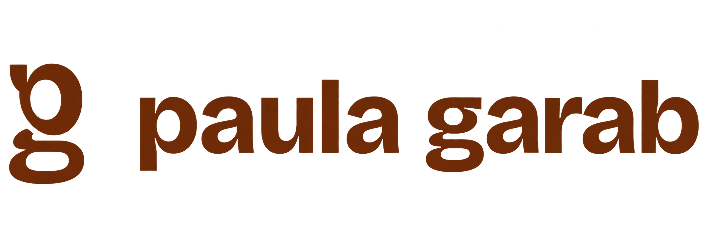
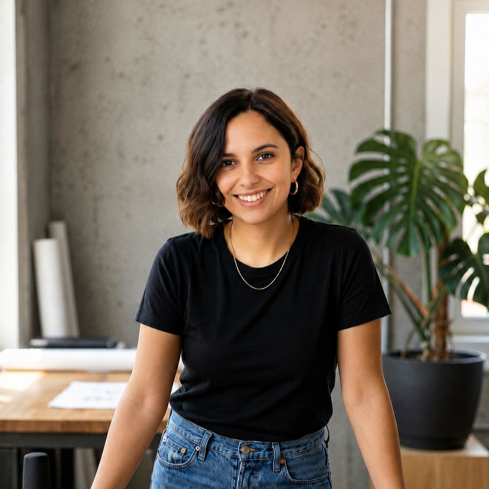
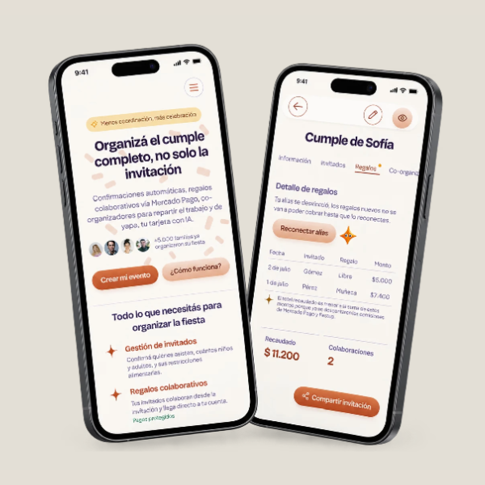

Deriva
App que conecta personas por afinidad, usando el territorio como señal.

Product Designer · Saas B2B · Design System
Soy Product Designer con formación en Diseño Industrial e Interiorismo. Combino investigación, pensamiento sistémico y diseño de interfaces para crear productos digitales intuitivos, consistentes y escalables.

Una selección de tres casos que muestran cómo pienso, investigo y diseño.
App que conecta personas por afinidad, usando el territorio como señal.

Auditoría UX de 6 flujos y 39 hallazgos, más Design System completo con validación WCAG AA.